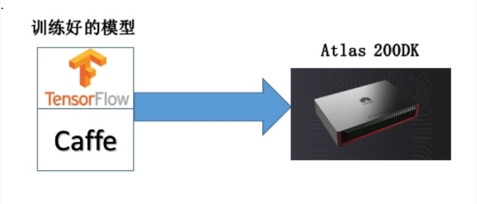

一、华为Atlas开发板（昇腾AI处理器）
1.1 介绍
华为Atlas200DK开发者套件（开发板）装有华为昇腾310AI处理器。主要功能是将昇腾310处理器的核心功能通过该开发板的外围接口开放出来，方便用户快速简捷的接入并使用昇腾310处理器强大的处理能力。
昇腾310AI芯片：是业界面向边缘计算场景最强算力的AI SoC（系统级芯片），可以实现高达16Tops的现场算力，支持同时识别包括车、人、障碍物、交通标志在内的200个不同的物体；一秒钟内可处理上千张图片。
其实就是一块AI的开发板（具有强大的计算能力）能够接收用户导入的已训练好的ML/DL模型，然后利用这块AI处理器强大计算能力快速让模型运转起来进行应用。所以用户需要完成的工作就是将训练好的模型导入Atlas开发板，令其运转起来。这里的关键就是如何将模型很好的导入到Atlas中，即要在满足Atlas框架要求下修改已训练的模型。

好直接附上官网，官网有Atlas开发板的使用介绍及入门，网址：华为昇腾
使用过程中有什么问题可以官网论坛寻找或者提问。
1.2 注意事项使用
需要准备的东西：
- 一台装有Ubuntu系统的电脑（使用虚拟机安装，或者真机都可以），但必须是官网要求的版本。
- 同时还需要另外一个Ubuntu系统作为Atlas开发板的系统，该系统也为官网指定。一定要一样。
- 上述第二个系统是装在SD卡中驱动开发板的，所以还需要一个SD卡。
- Atlas 200 DK开发板（废话）
- 普通网线/Tope-c数据线，用于连接Ubantu系统电脑。
- 树莓派摄像头，用于Atlas开发板的摄像头接口。
安装的大概流程为：
- 在虚拟机（真机）中安装ubuntu系统（一定官网指定）。
- 在虚拟机（真机）中部署开发工具MindStdio。（之前还要装依赖和Google浏览器），之后打来google浏览器进入127.0.0.1:8888，访问MindStdio,可视化开发环境是网页访问。
- 在Atlas上装摄像头。
- 使用另一个ubuntu系统制作SD卡。
- 制作完sd卡后插入Atlas中，启动开发板然后连接电脑，然后部署DDk，配置交叉编译。
- 运行demo(eg:图片分类),检查Altas是否运行正常。
安装过程中的注意事项：
- 首先一定参照官网的初级篇视频Atlas 200 DK系列教程—-初级篇和Atlas 200 DK的官方文档进行安装。
- 安装过程中出现错误首先查看文档及视频是否有遗漏之处，然后再去官网的论坛中查找相似的bug，没有就在论坛提问。
- 开发板是使用一个网络地址与计算机相连。
常用问题总结：
- MindStido 进入120.0.0.1后环境初始化失败，很有可能是虚拟机内存设的太小。
- 每次连接开发板，可以ifconfig查看开发板的网卡是否分配了地址，如果没有使用 service NetworkManager restart 重启网卡。或者手动在桌面右上角处连接对应网络（开发板网络设备名）。
- 开发板处数据线连接方式的静态地址默认为192.168.1.2，网线方式默认为192.168.0.2
- ssh HwHiAiUser@192.168.1.2 默认密码：Mind@123
1.3 部署应用实践
人脸检测项目
照着官网的教程直接来就可以了。架构如下：

- Atlas 200 DK开发者板使用的IP地址为192.168.1.2（USB方式连接）。
- Presenter Server与Atlas 200 DK通信的IP地址为UI Host服务器中与Atlas 200 DK在同一网段的IP地址，例如：192.168.1.223。
- 通过浏览器访问PresenterServer的IP地址本示例为：10.10.0.1，由于Presenter Server与MindStudio部署在同一服务器，此IP地址也为通过浏览器访问Mind Studio的IP。
介绍框架：模型（已训练好的人脸检测项目）部署在Atlas开发板中运行，开发板通过摄像头获取视频然后计算得到结果传回连接的计算机中，在计算机中有一个网页服务端用于显示人脸检测的结果。
步骤：
- 以Mind Studio安装用户进入facedetectionapp应用代码所在根目录，如/home/ascend/sample-facedetection。
- 执行部署脚本，进行工程环境准备。bash deploy.sh 192.168.1.2 local 或者internet
- 启动Presenter Server。python3 presenterserver/presenter_server.py –app face_detection &
- 运行Face Detection程序。bash run_facedetectionapp.sh 192.168.1.2 video Channel-2 &
1.4 总结
可以粗略的理解Atlas 200 DK为一台边缘计算的设备，只不过该设备造价比较昂贵。此外，不仅在建模时需要深度学习的知识，而且在将训练好的模型合适的导入设备中需要C++的编程知识，这里面涉及了一些硬件相关的知识。
本博客所有文章除特别声明外，均采用 CC BY-SA 4.0 协议 ，转载请注明出处！